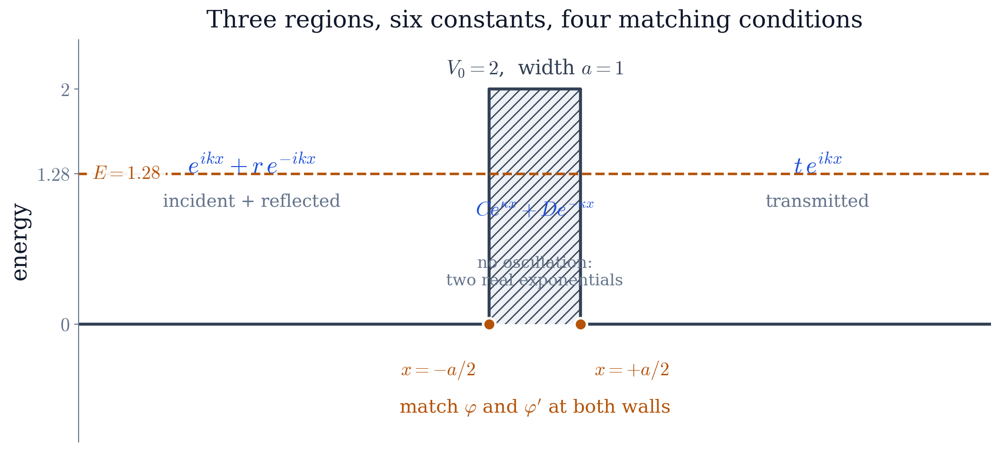
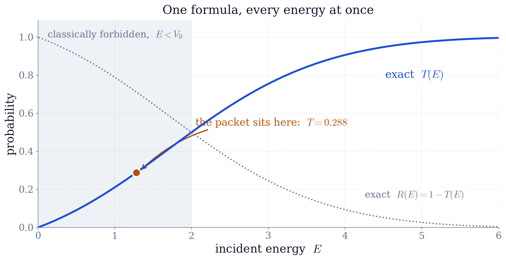
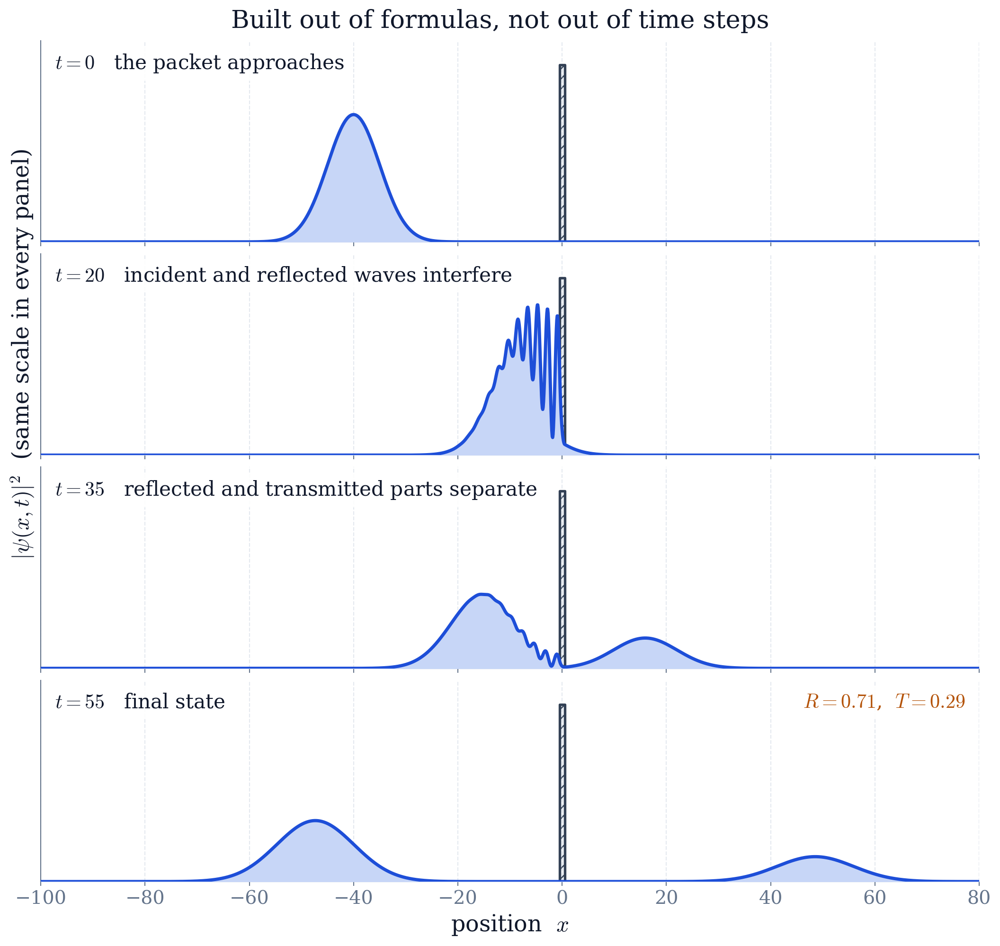
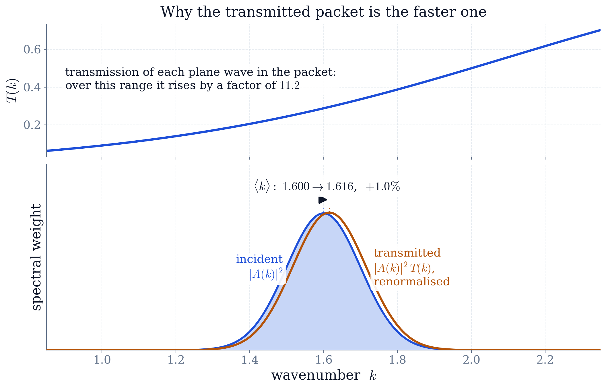

Worked example · solved on paper
Quantum Tunnelling of a Wave Packet through a Rectangular Barrier (Analytical)
The problem
A particle of mass \(m\) moves in one dimension and meets a rectangular barrier of height \(V_0\) and width \(a\),
with \(\hbar = m = 1\), \(V_0 = 2\) and \(a = 1\). Its wavefunction obeys the time-dependent Schrödinger equation
- (a)
Separate the variables and solve the resulting ordinary differential equation exactly in each of the three regions where \(V\) is constant. Impose continuity of \(\varphi\) and \(\varphi'\) at both walls and obtain the reflection and transmission amplitudes \(r(k)\) and \(t(k)\) in closed form.
- (b)
Give \(T(E) = |t|^{2}\) as a formula, and prove from it that \(R + T = 1\) identically. Plot \(T(E)\) from \(E = 0\) to \(E = 3V_0\), and account for the energies above the barrier at which \(T = 1\) exactly.
- (c)
Send a Gaussian wave packet \(\psi(x,0) = (2\pi\sigma^{2})^{-1/4}e^{-(x-x_0)^{2}/4\sigma^{2}}e^{ik_0(x-x_0)}\) at the barrier, with \(x_0 = -40\), \(\sigma = 5\) and \(k_0 = 1.6\), so that its mean energy is below \(V_0\). Expand it in the states of (a), write the exact evolution, and animate it. Predict \(T\) for the packet as a whole before evolving it, and check the prediction against the evolved wavefunction.
- (d)
Account for the difference between the transmission of the packet and the transmission of a plane wave at the packet's mean energy.
- (e)
Nothing above may be discretised, and no differential equation may be stepped forward in time. The one integral with no closed form — the superposition in (c) — may be evaluated numerically.
Abstract. The time-dependent Schrödinger equation is solved in closed form for a particle incident on a rectangular barrier. Separation of variables reduces it to a linear ordinary differential equation with constant coefficients in each of the three regions where the potential is constant; requiring \(\varphi\) and \(\varphi'\) to be continuous at the two walls gives four equations, which are assembled into a \(2\times2\) transfer matrix and solved for the reflection and transmission amplitudes. The result is a closed-form transmission coefficient \(T(E)\) valid at every energy, from which \(R+T=1\) follows as an algebraic identity and the above-barrier resonances \(T=1\) at \(qa=n\pi\) follow by analytic continuation. A Gaussian wave packet with mean energy \(0.64\,V_0\) is then expanded in these exact stationary states and evolved by superposition, giving \(T = 0.290\) and \(R = 0.710\) with \(R+T = 1.000\). The spectral decomposition shows the barrier acting as a high-pass filter: the transmitted packet's mean wavenumber is \(1.0\%\) higher than the incident packet's. The methods used are complex exponentials (Ch. 2), matrices (Ch. 3), the Fourier transform (Ch. 7), linear ordinary differential equations (Ch. 8) and separation of variables (Ch. 10).
1Separating the variables (Chapter 2)
The potential does not depend on time, so the equation admits solutions of the product form \(\psi(x,t) = \varphi(x)\,e^{-iEt/\hbar}\). Substituting this into the Schrödinger equation gives
and since \(i\hbar\,\frac{d}{dt}e^{-iEt/\hbar} = E\,e^{-iEt/\hbar}\), the exponential cancels from both sides. What is left is an ordinary differential equation for \(\varphi\) alone,
Equation (2) is the whole of the physics in this report. Everything that follows is ordinary differential equations applied to it: a second-order linear equation with constant coefficients, solved region by region and joined at the boundaries.
2Solving in each region (Chapter 2)
The potential is piecewise constant, so (2) has constant coefficients in each of three regions, and its solutions there are exponentials.
Outside the barrier (\(|x| > a/2\)).
Here \(V = 0\), so the coefficient of \(\varphi\) is \(+2mE/\hbar^{2}\), which is positive. The characteristic equation \(\lambda^{2} + k^{2} = 0\) has imaginary roots, and the two solutions oscillate:
Inside the barrier (\(|x| < a/2\)).
Here \(V = V_0 > E\), so the same coefficient is \(-2m(V_0-E)/\hbar^{2}\), which is negative. The characteristic equation \(\lambda^{2} - \kappa^{2} = 0\) has real roots, and the two solutions do not oscillate at all — one grows and one decays:
That change of sign is the origin of tunnelling. A classical particle stops at the wall because no real motion is available to it at \(E < V_0\); the wave does not stop, it changes from a sinusoid into an exponential and continues, reduced. Both solutions in (4) are needed. The decaying one dominates near the first wall, but the growing one, small as its coefficient is, is what carries an amplitude to the second wall and out the far side.
Physical conditions now select which combination is wanted. The particle is incident from the left, so to the left of the barrier there is an incoming wave and a reflected one, and to the right there is only an outgoing wave — nothing returns from \(x = +\infty\). Normalising the incoming amplitude to \(1\),
which leaves four unknown constants: \(r\), \(t\), \(C\) and \(D\).

3The matching conditions
At a step of finite height, both \(\varphi\) and \(\varphi'\) must be continuous. The reason is (2) itself: it expresses \(\varphi''\) in terms of \(\varphi\), and if \(\varphi\) and \(V\) are bounded then \(\varphi''\) is bounded, so \(\varphi'\) cannot jump and \(\varphi\) cannot have a kink. Continuity of both quantities at each of the two walls gives four equations:
Four linear equations in four unknowns: the problem is now solved in principle, and the rest is bookkeeping.
4The transfer matrix
Solving (6)–(9) by substitution is possible but unpleasant. Written in matrix form the same elimination is two lines. For a solution built out of \(e^{\pm px}\), collect the values of \(\varphi\) and \(\varphi'\) at a point into a single matrix acting on the pair of amplitudes,
Continuity at a wall is then the statement that the two sides produce the same column vector there. Equations (6)–(7) become
Solving (12) for \((C,D)\) and substituting into (11) eliminates the interior amplitudes and leaves the whole barrier as a single matrix,
The two rows of (13) read \(1 = M_{11}t\) and \(r = M_{21}t\), so
Carrying out the matrix product and collecting the exponentials into hyperbolic functions gives the transmission amplitude in closed form,
The structure of (13) is worth noting. A second barrier would insert two more factors into the same product and change nothing else in the derivation, which is what makes the transfer matrix the standard tool for layered structures.
5The transmission coefficient
Taking the squared modulus of (15), and simplifying with \(k^{2} + \kappa^{2} = 2mV_0/\hbar^{2}\) and \(k^{2}\kappa^{2} = 4m^{2}E(V_0-E)/\hbar^{4}\), gives
\(T\) is non-zero for every \(E > 0\), however far below \(V_0\): that is tunnelling, and here it is a property of a formula rather than an observation about a particular run.
5.1\(R+T=1\) is an identity
The same calculation applied to \(r\) gives
Writing \(u = V_0^{2}\sinh^{2}(\kappa a)/4E(V_0-E)\), equations (16) and (17) are \(T = 1/(1+u)\) and \(R = 1/(1+u^{-1}) = u/(1+u)\), so
for every \(u\) — that is, at every energy, for every barrier height and every width. Conservation of probability is therefore not a check to be performed on this solution but a property of it. Evaluating \(|r|^{2}+|t|^{2}-1\) numerically across the range of energies used below returns \(9\times10^{-16}\), which measures the arithmetic of the computer and not the correctness of the physics.
5.2Above the barrier
Equation (16) was derived assuming \(E < V_0\), but nothing in the final expression requires it. For \(E > V_0\), \(\kappa\) becomes imaginary: writing \(\kappa = iq\) with \(q = \sqrt{2m(E-V_0)}/\hbar\) and using \(\sinh(iqa) = i\sin(qa)\) turns \(\sinh^{2}(\kappa a)\) into \(-\sin^{2}(qa)\), so
This is a substitution, not a second derivation, and it is available only because the solutions were written as exponentials in the first place. It predicts \(T = 1\) exactly whenever \(qa = n\pi\) — a barrier whose width is a whole number of half-wavelengths is perfectly transparent, the same interference condition that makes an anti-reflection coating work.

At the energy used below, \(E = 1.28 = 0.64\,V_0\), equation (16) gives \(T = 0.288\).
6The wave packet (Chapter 1)
A stationary state has a single energy and is spread over the whole line; a particle that is somewhere and moving is a superposition of them. Building that superposition is a Fourier transform, and it introduces no approximation.
The packet at \(t = 0\) is the Gaussian
Its Fourier transform is obtained by completing the square in the exponent, one of the few transforms that can be done in a single line:
a Gaussian in \(k\) centred on \(k_0\) with width \(\Delta k = 1/2\sigma = 0.1\), narrow compared with \(k_0 = 1.6\).
Equation (21) expresses the initial packet as a sum of plane waves. Each plane wave \(e^{ikx}\) in that sum is replaced by the exact scattering state \(\varphi_k(x)\) of (5), which is what that plane wave becomes in the presence of the barrier, and each evolves with its own phase \(e^{-iE_kt/\hbar}\). The exact solution of the original time-dependent problem is therefore
Every ingredient of (22) is a closed-form expression. The integral over \(k\) is not: \(\varphi_k\) depends on \(k\) through \(\cosh\) and \(\sinh\) of \(\kappa(k)a\), and no elementary antiderivative exists. It is evaluated numerically, and it is the only step of this report that is. The distinction matters — no grid carries the differential equation, no time step is taken, and \(\psi\) at \(t = 55\) is obtained without first obtaining \(\psi\) at \(t = 54\). Each frame of the animation below is (22) evaluated at one time, independently of every other.
6.1Predicting the result in advance
Because the plane waves evolve independently, each is transmitted with probability \(T(E_k)\), and the transmitted fraction of the whole packet is the average of \(T\) over the packet's own spectrum:
This is a prediction made before any evolution is carried out.
7Results
Evaluating (22) on a grid of times and integrating \(|\psi|^{2}\) on each side of the barrier at \(t = 55\), when the reflected and transmitted parts have fully separated, gives
The transmitted fraction agrees with the prediction (23) to four decimal places, as it must: the two are the same integral evaluated in a different order.


7.1Why the packet does not transmit like a plane wave
Equation (23) gives \(0.2901\), while (16) evaluated at the packet's mean energy alone gives \(0.288\). The difference is not an error; it is the answer to part (d) of the problem.
The packet contains a spread of energies, and \(T(E)\) is not constant over that spread — it rises by a factor of \(11\) between the slowest and the fastest components present. Transmission therefore acts as a filter on the packet's spectrum,
weighting it towards larger \(k\). Two consequences follow. First, \(\langle T(E)\rangle > T(\langle E\rangle)\), because \(T\) is convex across the packet: the fast half of the packet gains more than the slow half loses. Second, the transmitted packet is measurably faster than the incident one, its mean wavenumber rising from \(1.600\) to \(1.616\). Nothing accelerated; the barrier simply passed the fast components preferentially and reflected the slow ones.

8Which course methods were used
Stationary states (Chapter 2). Separation of variables reduces the time-dependent Schrödinger equation to the ordinary differential equation (2), and works because \(V\) does not depend on time. The energy \(E\) enters as the separation constant, not as an assumption.
Piecewise-constant potentials (Chapter 2). Equation (2) is linear with constant coefficients in each region; its characteristic equation has imaginary roots outside the barrier and real roots inside, which is the whole difference between an oscillation and a decay. The continuation \(\kappa \to iq\) then turns (16) into (19) and produces the above-barrier resonances without a second calculation.
Superposition (Chapter 1). A packet is a superposition of stationary states, each carrying its own phase \(e^{-iE_kt/\hbar}\). That the transmitted packet can be written down at all follows from the linearity of the equation, and from nothing else.
The momentum representation (Chapter 1). The packet is decomposed by (21) and reassembled by (22); the transform of a Gaussian is evaluated by completing the square.
Linear algebra (a prerequisite, not a chapter here). The four matching conditions (6)–(9) are assembled into the matrix equations (11)–(12), and eliminating the interior amplitudes becomes the matrix product (13).
9Conclusion
Matching exponential solutions across the two walls of a rectangular barrier gives the transmission coefficient in closed form, equation (16), valid at every energy. From that single expression follow three results that require no further calculation: transmission is non-zero at every energy below the barrier, \(R+T=1\) holds identically rather than approximately, and the barrier becomes perfectly transparent above its top whenever its width is a whole number of half-wavelengths.
Expanding a Gaussian wave packet in these exact stationary states and evolving it by superposition reproduces the full collision, with \(T = 0.290\) and \(R = 0.710\) summing to unity, and the transmitted fraction is predicted exactly by averaging \(T(E)\) over the packet's spectrum before any evolution is performed. That spectral view also explains why a packet does not transmit like a plane wave of its mean energy: the barrier is a high-pass filter, and what emerges from it is faster than what arrived.
The method generalises directly. Any potential that is piecewise constant can be solved the same way, with one factor in the transfer-matrix product per layer, and a smoothly varying potential can be approximated to any accuracy by enough layers.
References
M. L. Boas, Mathematical Methods in the Physical Sciences, Wiley, 3rd ed., 2006 (Chapters 3, 7, 8 and 13).
D. J. Griffiths, Introduction to Quantum Mechanics, Cambridge, 3rd ed., 2018 (the rectangular barrier and the transfer matrix).
E. Merzbacher, Quantum Mechanics, Wiley, 3rd ed., 1998 (wave-packet scattering and the spectral decomposition of transmission).